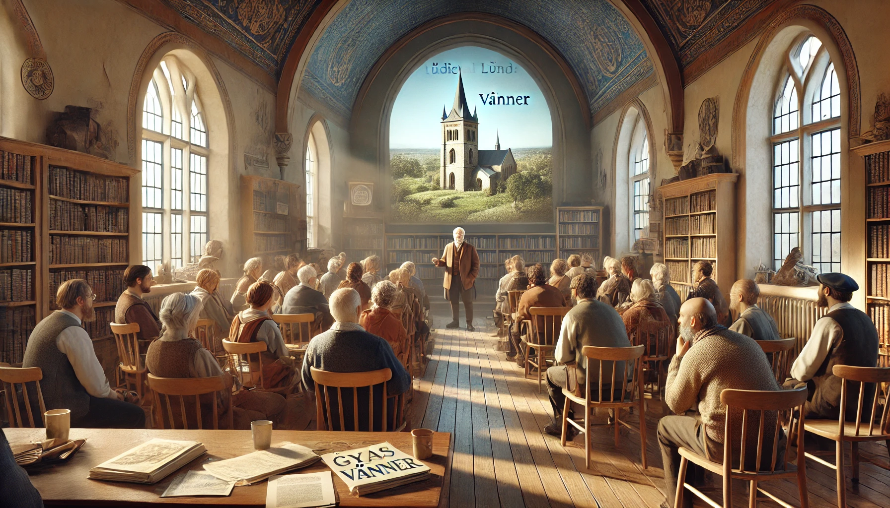

Våra aktiviteter och arbetsgrupper
På denna sida presenterar vi olika aktiviteter som görs i föreningens regi, men även ibland ifall vi vill tipsa om intressanta aktiviteter utanför föreningens regi.
Du kan själv söka både på framtida och genomförda aktiviteter. Vi brukar fylla på information om genomförda aktiviteter, tex bilder eller annan trevlig information om hur det gick till just den gången.
Våra aktiviteter anordnas oftast av våra arbetsgrupper, vill du läsa mer om dem eller kanske t.o.m. bli medlem i en av dem, se info på föreningssidan
Aktuella aktiviteter
-
20/3-25 16:00 på Malmöhus slott, Malmö
Rundtur på Malmöhus slott. Vi träffas ute i foajen 10 minuter innan det börjar.
-
3/4-25 12:00 Lunchföreläsning på Lunds stadsbibliotek
Föreläsning om Lunds medeltid, Lunds stadsbibliotek.
-
10/5-25 13:00 Glimmingehus
Rundtur på Glimmingehus, vi samlas på gården 10 minuter innan.
-
4/6-25 12:00
Samling vid Ales stenar. Sten Markusson föreläser om Ale stenar. Tänk på vädret och välj bra kläder.
-
20/7-25 08:00 Parkerering vid Höörs mitt
Föreningens årliga utflykt. Detta året går turen till österlen. Turen går till Kungagraven, Kikvik och Simrishamn. Närmare beskrivningen kommer när det närmar sig
Valda aktiviteter
-
3/4-2021 12:00 Lunchföreläsning på Lunds stadsbibliotek
Föreläsning om Lunds medeltid, Lunds stadsbibliotek.
Denna föreläsningen var väldigt trevligt, ungefär 100 medlemmar dök upp för att lyssna på detta intressanta ämne!
